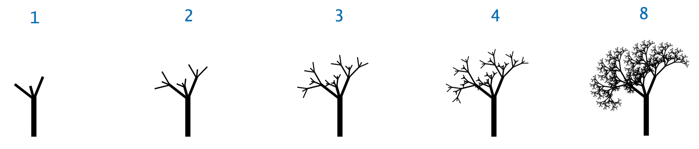

On competing the lab you will:
Create a new project in Eclipse called Lab7Recursion.
Binary Number. Write a recursive algorithm for finding the binary representation of a decimal number. (hint: repeatedly divide 2 into the decimal number and read the remainders backwards) .Provide a Java implementation, BinaryNumbers.java, and ascertain the growth order.
Reversing a String. Write two methods, one non-recursive and one recursive, that returns a String that is the reverse of the input String.e.g. System.out.println(reverseString(“Darragh and Ronan”)); would print: “nanoR dna hgarraD”.
A Tree. Create and run the following fractal program that draws a tree. You will need to put stdlib_package.jar on your build path. Modify the program such that it includes a four branches(e.g. include a forth recursive call).
import edu.princeton.cs.introcs.StdDraw;
public class TreeFractal{
public static void tree(int n, double x, double y, double a, double branchRadius) {
double bendAngle = Math.toRadians(15);
double branchAngle = Math.toRadians(37);
double branchRatio = 0.65;
double cx = x + Math.cos(a) * branchRadius;
double cy = y + Math.sin(a) * branchRadius;
StdDraw.setPenRadius(0.001 * Math.pow(n, 1.2));
StdDraw.line(x, y, cx, cy);
if (n == 0) return;
tree(n-1, cx, cy, a + bendAngle - branchAngle, branchRadius * branchRatio);
tree(n-1, cx, cy, a + bendAngle + branchAngle, branchRadius * branchRatio);
tree(n-1, cx, cy, a + bendAngle, branchRadius * (1 - branchRatio));
}
public static void main(String[] args) {
int n = Integer.parseInt(args[0]);
StdDraw.enableDoubleBuffering();
tree(n, 0.5, 0, Math.PI/2, 0.3);
StdDraw.show();
}
}
Algorithm S(n)
//Input: A positive integer n
//Output: The sum of the first n cubes
if n = 1 return 1
else return S(n − 1) + n ∗ n ∗ nAlgorithm Min1 (A[0..n − 1])
//Input: An array A[0..n − 1] of real numbers
if n = 1 return A[0]
else temp ← Min1 (A[0..n − 2])
if temp ≤ A[n − 1] return temp
else return A[n − 1]